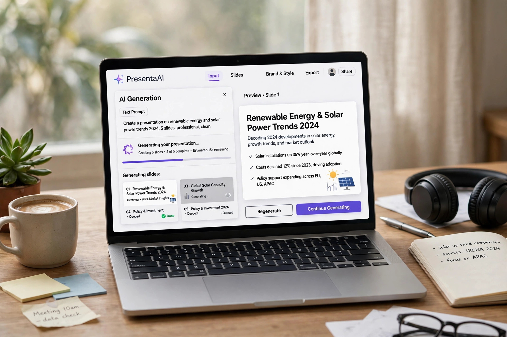
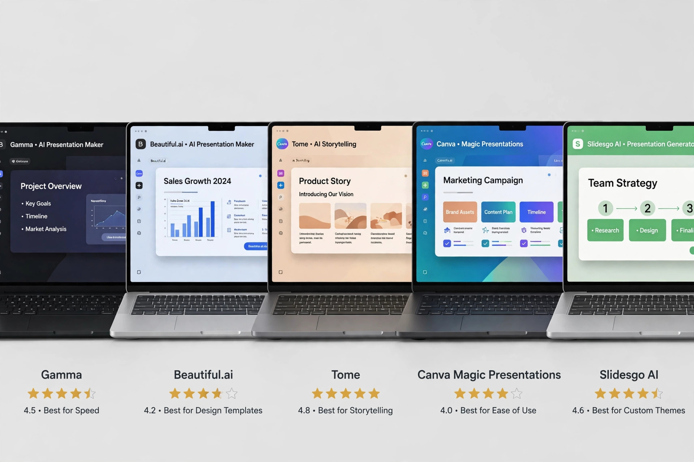

5 AI Presentation Makers You Can Use Without an Account (2026)
The AI presentation maker industry has an account-wall problem. Gamma, Canva, Beautiful.ai — the big names all want your email before generating a single slide, and the free tiers are credit-countdown trials wearing a "free" label. This guide compares 5 presentation tools whose free tiers are documented as usable without an account — so you can type a topic, get a real deck, and download an editable file right now, without surrendering your inbox first.

A note on method before we start: this comparison is built from each tool's official pricing pages, FAQs, and documentation as of October 2026, plus reputable third-party reviews — not from a one-afternoon hands-on session that would be stale by next quarter. Free tiers in this space change fast and the no-sign-up claim is the first thing to erode; where the official site is ambiguous, it's flagged rather than guessed. If a tool suddenly demands a login, its terms changed; the criteria below tell you what to check.
What to look for in a presentation maker
Five things decide whether a "free, no sign-up" presentation tool is actually useful:
True no-sign-up generation. Many tools let you see the landing page without an account but demand login the moment you click "Generate." The bar here is higher: type a prompt, get slides, with no email gate anywhere in that flow.
Editable PPTX export. A deck you can't download is a demo, not a deliverable. The export must be a real .pptx with editable text boxes — not a flattened PDF, not a watermarked preview, not a "share link" that expires. If you need to present from your own machine or hand the file to a colleague, this is non-negotiable.
AI generation quality. The tool should turn a topic or pasted text into a structured deck: title slide, section breaks, bullet hierarchy, suggested visuals. The best ones pull in current data via web search instead of reciting training-data platitudes.
Document import. Half of all presentations start as something else — a report, a doc, a PDF. Tools that convert existing documents into slides save the most time in practice, because the content already exists; only the structure is missing.
The real catch. Every free tool has one: export limits, watermarked downloads, generation caps, or a paywalled feature sitting exactly where you need it. This roundup names each catch explicitly so there are no surprises at the download button.
1. Easyslides.ai — the no-login pick
Easyslides.ai is the cleanest no-sign-up story in this roundup: multiple independent directories describe it as usable "without the need for login or registration," and its own pages advertise "100% Free" generation with "no login required." It's a straightforward text-to-slides tool with a template library aimed at students, teachers, and professionals.
No-sign-up access: Documented across third-party listings as requiring no login or registration to generate. You enter your content, the AI organizes it into slides, and you work from there — the whole flow is designed around instant access rather than onboarding.
Best for: Anyone who wants the shortest path from idea to deck with zero friction. The template selection covers standard business and education layouts, and the interface is deliberately simple — no feature maze, no upsell screens between you and the generate button. Its PDF-to-PPT converter is equally login-free, which matters if your starting point is an existing document rather than a blank prompt.
Watch out for: Simplicity is the trade. Third-party reviews note limited layout customization and no undo for edits during creation — it's a generation tool first, a design studio second. If you need pixel-level control over every element, you'll be exporting to PowerPoint and finishing there. Which is fine: the export is the point.
2. SlidesGo — the free Kimi-alternative pick
SlidesGo positions itself as a free alternative to Kimi's PPT generator, and its headline claim is explicit: "No sign-up required — just enter your topic and get a polished PPT." It generates presentations from text descriptions, enriches them with real-time web search, and exports fully editable .pptx files.
No-sign-up access: The site's own copy states free AI PPT generation with no sign-up. Generation, web-search enrichment, and PPTX download are all described as available without an account — a notably complete free flow for this category.
Best for: Decks that need current information. The web-search enrichment is the differentiator: instead of generic AI filler, slides can include recent data, statistics, and context pulled from the live web. Multi-language support covers English, Chinese, and dozens of others, and document-to-PPT conversion handles PDF, Word, Excel, Markdown, and HTML inputs. For a deeper look at account-free AI image tools to dress up those slides, our free AI image generator roundup covers generators that similarly ask for nothing upfront.
Watch out for: As a newer independent tool, its template variety and long-term reliability are less proven than the established players. The "featured in" press logos on its site are newsletter mentions, not enterprise endorsements — evaluate the output, not the badges. And like every tool here, verify the no-sign-up flow is still intact before a deadline depends on it.

3. GenPPT — the Tome-alternative pick
GenPPT markets itself as a free Tome AI alternative, and its FAQ is unambiguous: users can "generate and download presentations without signing up for an account or entering payment details." Presentations export as standard .pptx files, editable in PowerPoint, Google Slides, or Keynote.
No-sign-up access: Per its own FAQ, both generation and download are account-free with no payment details required. That's the full loop — the exact thing most competitors gate.
Best for: Anyone who liked Tome's concept but not its pricing. Document upload is a strength here: feed it an existing PowerPoint file as a template, or convert PDF, Word, Excel, and Markdown documents directly into presentations. Multi-language generation covers English, Chinese, Spanish, and dozens more. If your workflow starts from source material rather than a blank prompt, the upload-to-deck path is the fastest in this list.
Watch out for: It's a smaller independent project, so expect less polish in the editor and thinner documentation than the big platforms. The AI model claims on its press pages should be taken as marketing until verified — what matters is whether the slides it generates for your topic are usable, which costs nothing to test since there's no account to create.
4. Prezentacje AI — the honest-catch pick
Prezentacje AI earns its place as the honest contrast in this roundup. Its FAQ states directly: "You can create presentations without signing up." The free plan includes 3 presentations per month, slide preview, 10 generated images, and 2 exports per month in PPTX and PDF. The catch is equally direct: exporting requires a paid plan.
No-sign-up access: Creation and preview are account-free, confirmed by the official FAQ. But the download that matters — the actual file — sits behind the paywall. The free tier lets you build and look; it doesn't let you take the deck home.
Best for: Evaluating whether AI-generated structure works for your content before committing money or an email address anywhere. The chat-based editing (change content, colors, layout by talking to the AI) is a genuinely nice interaction model, and 3 free presentations a month is enough to test the concept thoroughly. Think of it as the showroom: useful for deciding what you want, not for delivering it.
Watch out for: That export paywall is exactly what this roundup filters against, so go in with eyes open. If you build a deck here and love it, you'll be paying to download it — which is a fine trade if the tool earned it, but it's not the no-sign-up deal the other four offer. Once you have a downloadable file from elsewhere, our free PDF summarizer roundup covers account-free tools for condensing the source documents those decks are built from.
5. Wonderslide — the converter-specialist pick
Wonderslide isn't a prompt-to-deck generator — it's a PDF-to-PPT converter, and it's included because for a huge class of real work, conversion is the job. Its converter page documents the tool as free with "no sign-up, no email required": drop a PDF up to 50 MB and 100 pages, get one slide per PDF page seconds later.
No-sign-up access: Explicitly documented as no sign-up and no email. The conversion preserves editable text boxes (keeping original size, color, and bold/italic styling), matches fonts by name, and outputs a real .pptx — independent testing noted it preserved 16:9 proportions where competitors distorted them, and converted tables into genuine editable PowerPoint tables rather than images.
Best for: The extremely common case of "I have a PDF report and need slides by tomorrow." Academic papers, business reports, exported dashboards — anything already in PDF form becomes an editable deck in seconds, with no account and no email. Files are deleted after conversion and the output after 60 minutes, which is a reasonable privacy posture for a free tool.
Watch out for: It's a converter, not a creator — it won't write your narrative, restructure your argument, or generate new visuals. Scanned PDFs come out as images (no OCR), password-protected files aren't supported, and the upsell is a "redesign in one consistent style" feature where paid plans begin. Pair it with one of the generators above when you need both conversion and creation.
Side-by-side comparison
| Tool | Truly no sign-up? | PPTX export | AI generation | Standout trait |
|---|---|---|---|---|
| Easyslides.ai | Yes | Yes | Text-to-slides | Zero-friction no-login flow |
| SlidesGo | Yes | Yes — fully editable | Topic + web-search enriched | Current data via live search |
| GenPPT | Yes | Yes — standard .pptx | Prompt + document upload | Free Tome alternative |
| Prezentacje AI | Partial — creation yes, export no | Paid plan only | Chat-based editing | Best try-before-you-buy showroom |
| Wonderslide | Yes | Yes — from PDF | No (converter) | PDF-to-PPT specialist, no email |
"Truly no sign-up" means the full generate-and-download flow is documented as account-free. Prezentacje AI is flagged because its export requires a paid plan.
Which one should you actually use?
You want a deck from a topic with zero friction: Easyslides.ai. No login exists to slow you down; type, generate, download.
Your slides need current facts and figures: SlidesGo. The web-search enrichment is the only feature in this list that addresses AI's staleness problem, and the editable PPTX means you own the result.
You're starting from existing documents: GenPPT for mixed sources (docs, spreadsheets, markdown), Wonderslide when the source is already a PDF. Between them they cover every "turn this file into slides" scenario without an account.
You want to evaluate AI slide structure before spending anything: Prezentacje AI. Build and preview free, pay only if the output earns it — just don't build your deadline deck there.
You already have a PDF and need slides now: Wonderslide. Seconds, no email, editable output — the most honest free tool in this roundup because it promises the least and delivers all of it.
FAQ
Why do most AI presentation makers require sign-up?
Three reasons, in order of honesty: generation costs money (every deck burns GPU credits, and accounts enable rate limiting), the freemium funnel (your email is worth more than the free tier costs them), and product analytics. The no-sign-up tools in this list accept higher abuse risk in exchange for growth — which is exactly why their terms deserve periodic re-checking. A tool that's account-free today may add a gate tomorrow when the bills arrive.
Can I really get an editable PPTX without an account?
Yes — four of the five tools here document it. The key test is whether the download contains editable text boxes versus flattened images. Easyslides.ai, SlidesGo, GenPPT, and Wonderslide all describe editable .pptx output; Prezentacje AI is the exception, gating export behind its paid plan. If a tool's "download" button produces only a PDF or a share link, that's the tell.
Will AI-generated slides look professional enough for work?
For internal decks, status updates, and classroom presentations: yes, with 15–30 minutes of human editing. For client-facing or executive presentations: treat the AI output as a structured first draft. Common AI tells include repetitive layouts across long decks, generic stock-style visuals, and bullet points that state the obvious. The structure and time savings are real; the final polish is still yours.
What's the catch with "free" AI presentation tools?
Always one of four: generation caps (N decks per month), export limits or paywalls, watermarked output, or data usage (your content training their models). This roundup names each tool's catch in its section — the honest ones put it in their FAQ, like Prezentacje AI does. If you can't find the catch on a free tool's site, assume it's your data and check the privacy policy.
How do I make AI slides not look generic?
Four moves: feed the AI your actual content instead of a two-word topic (specificity in, specificity out); replace every AI-suggested image with a real one from your work; cut half the bullets — AI overwrites, and restraint reads as confidence; and apply your own template or brand colors after export rather than accepting the default theme. The tools build the skeleton; the judgment that makes it yours can't be automated.